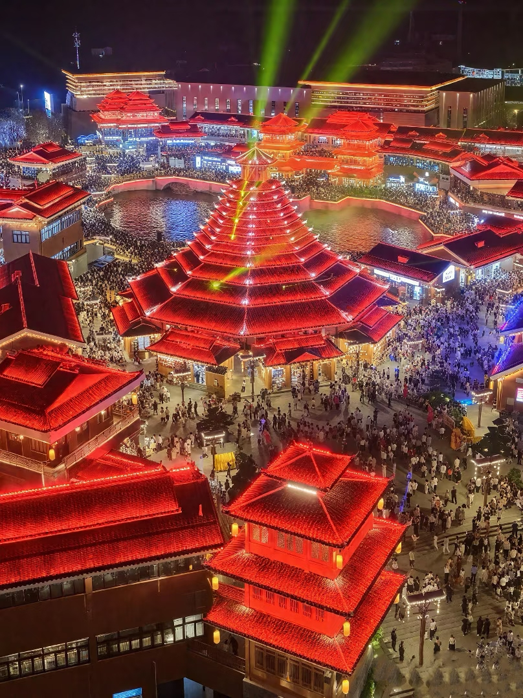
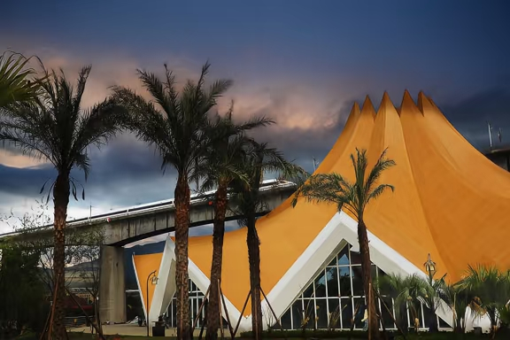
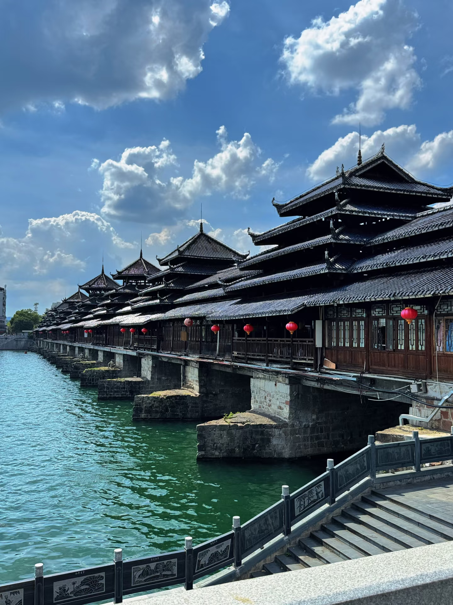
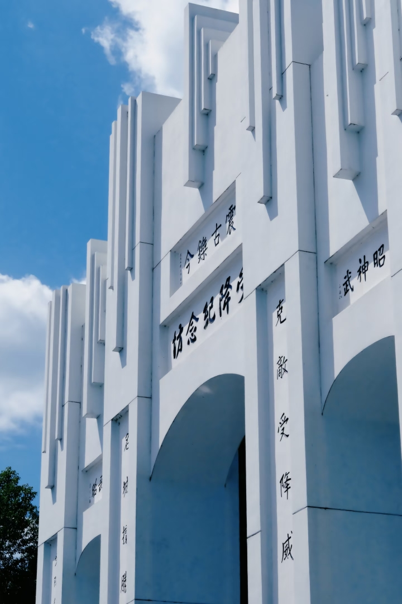
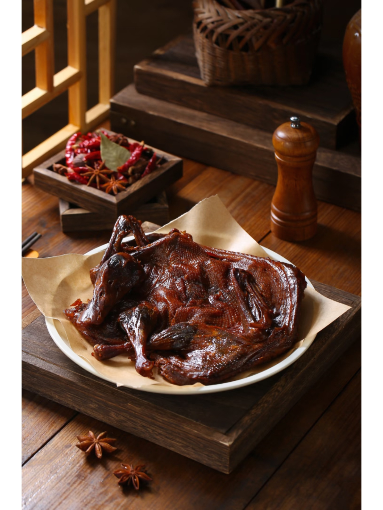
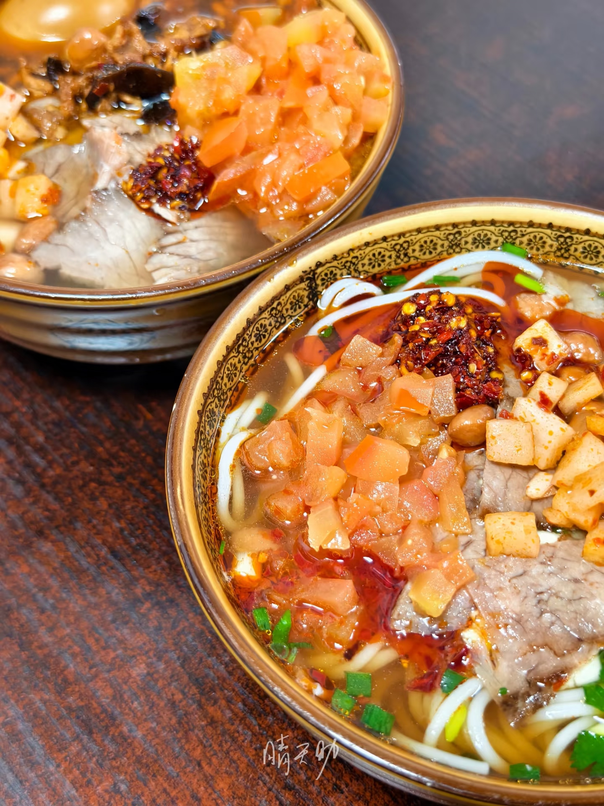
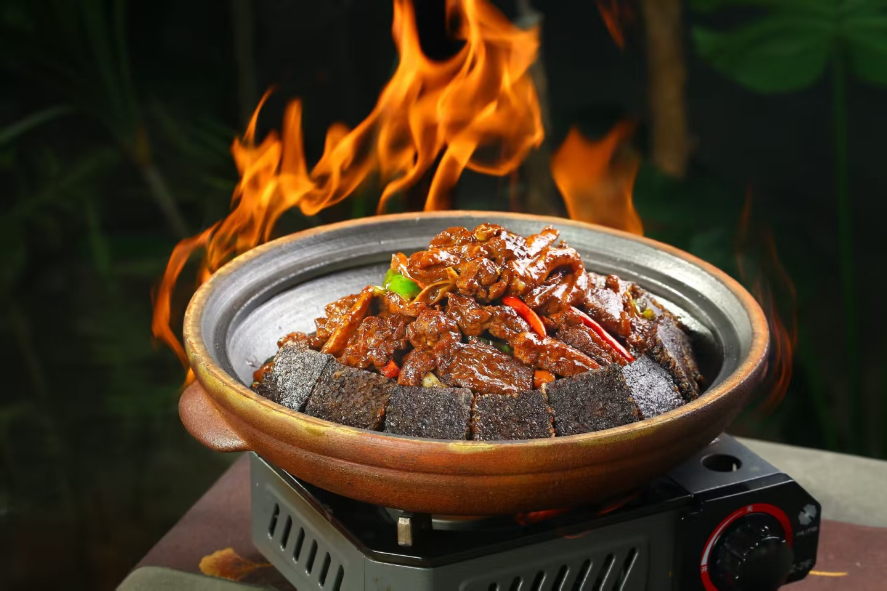

哈喽～
张家慧
Welcome to my site
About Me
我是张家慧，一个热爱生活，喜欢分享的人。
我来自于中国湖南省怀化市，平时喜欢用画笔记录生活，也爱用音乐治愈自己。
我喜欢在各个领域当中学习，我喜欢寻找新的技能与方法来提升自我，来探索未知，我喜欢冒险和旅行
我也热爱看推理小说与电视剧，也喜欢打游戏，我喜欢尝试各种事情并且付诸于实践
My Hometown -Huaihua（怀化）
怀化景点——作为 2025 湖南旅游发展大会主办地，怀化正以 “新旧共生” 的姿态焕新文旅活力。老牌地标里，芷江风雨桥横跨舞水，木质廊桥的榫卯间藏着千年侗族智慧，是游人打卡的必到之处；芷江受降纪念馆庄严肃穆，一件件文物诉说着抗战胜利的历史荣光，成为红色研学的重要站点。而新建的榆树湾景区与东盟集，则为这座城注入新活力，榆树湾复刻古商埠风貌，青石板路串联起非遗手作与特色小店；东盟集汇聚东南亚风情，让游客不出国门便能感受异域文化
榆树湾景区
榆树湾景区——古色古香的多名族文化建筑
东盟集
东盟集——东南亚与当地的特色建筑的融合
风雨桥
风雨桥——侗族建筑艺术的杰出代表
芷江受降纪念坊
芷江受降纪念坊——历史的见证者
怀化味道——味觉是认识怀化的另一种方式。芷江酱板鸭皮脆肉嫩，辣得醇厚过瘾；怀化米粉细滑劲道，浇上骨汤配码，是本地人清晨的唤醒滋味；洪江血粑鸭将糯米血粑与鸭肉同炖，鲜香浸透每一口，都是让人难忘的家乡味道。
芷江酱板鸭
怀化米粉
洪江血粑鸭
这座 “火车拖来的城市”，从不缺高光时刻。前段时间 “晓华姐” 理发的暖心故事，让怀化的烟火气火遍全网；而易烊千玺、成毅、袁娅维等从怀化走出的明星，更让这座城多了份星光加持。从红色记忆到现代风情，从地道美味到人文温度，这就是值得你来探索的 “福地怀化”。
My Hobbies
Music
我最喜欢的音乐风格是R&B、Jazz Hiphop和Pop，常听的歌如下：
我最喜欢的音乐歌手：
方大同
陶喆
Keshi
photography and Painting
我热爱记录生活和绘画，这是我表达自己的一种方式，这里是我的日常生活照片。